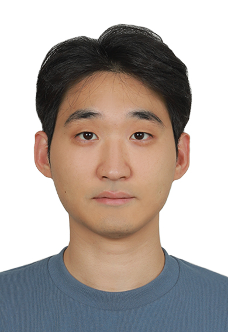

Dong Bok Lee
Ph.D. Student, KAIST AI
Currently a research intern at Meta Superintelligence Labs

About
I am a Ph.D. student in Artificial Intelligence at KAIST, advised by Sung Ju Hwang, where I also received my M.S. My research aims to make machine learning models more reliable and more efficient to train and deploy, with a recent focus on large language models after pre-training: reward models for test-time scaling, knowledge distillation, and safety guard models.
Earlier, I worked on data- and compute-efficient learning more broadly, including meta-learning, dataset distillation, cost-sensitive Bayesian optimization for hyperparameter tuning, and prior-data fitted networks for learning-curve and scaling-law extrapolation. I have been a research intern at Microsoft Research Asia and Meta Superintelligence Labs.
Interests: reward models and test-time scaling · knowledge distillation · AI safety · meta-learning · hyperparameter optimization · dataset distillation
Experience
- Research Intern, Meta Superintelligence LabsJun 2026 – Nov 2026Hosted by Hayeon Lee and Alex Min.
- Research Intern, Microsoft Research AsiaJul 2025 – Dec 2025Hosted by Lei Song and Jiang Bian. Reward models for multi-domain test-time scaling (TMLR 2026).
Education
- Ph.D. in Artificial Intelligence, KAIST2021 – presentAdvisor: Sung Ju Hwang
- M.S. in Artificial Intelligence, KAIST2019 – 2021Advisor: Sung Ju Hwang
- B.S. in Computer Science, Korea University2012 – 2018
Publications
* equal contribution
2026
2025
-
Automated Structured Radiology Report Generation with Rich Clinical Context
-
PCoreSet: Effective Active Learning through Knowledge Distillation from Vision-Language Models
-
FedSVD: Adaptive Orthogonalization for Private Federated Learning with LoRA
-
Cost-Sensitive Freeze-thaw Bayesian Optimization for Efficient Hyperparameter Tuning
-
Bayesian Neural Scaling Law Extrapolation with Prior-Data Fitted Networks
-
HarmAug: Effective Data Augmentation for Knowledge Distillation of Safety Guard Models